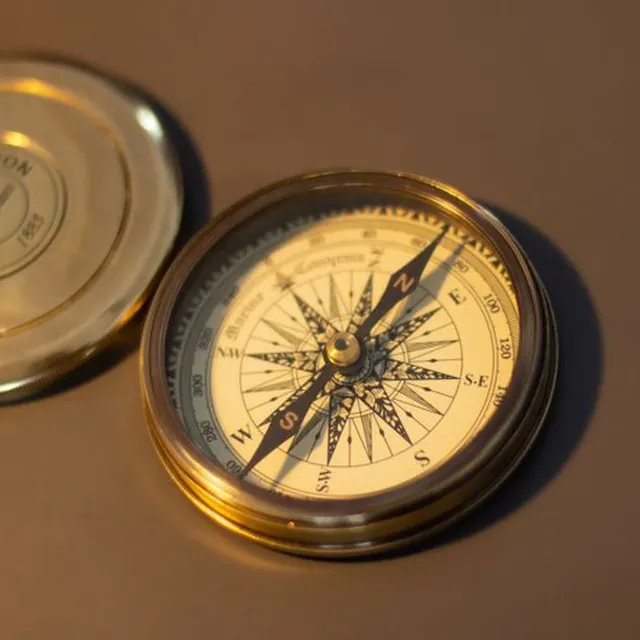
Brass pocket compass
Lid closes with a soft click. Needle still finds north.
SAR 380
Cabinet of curious finds · Al Balad, Jeddah
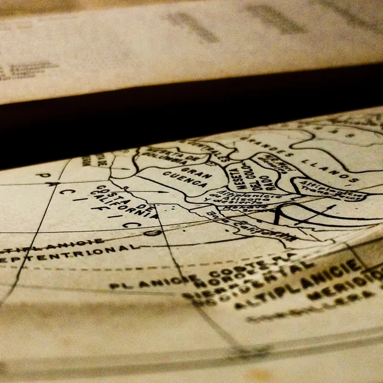
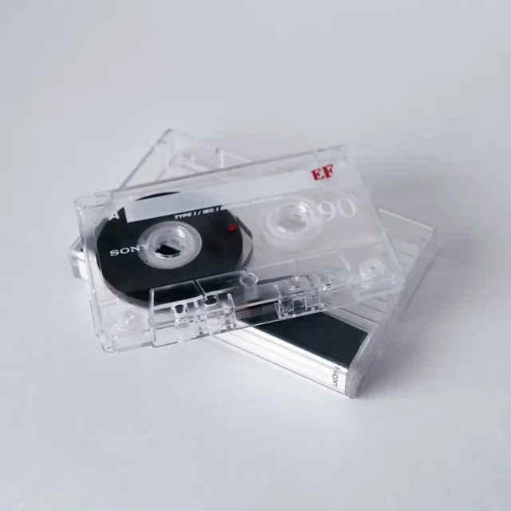
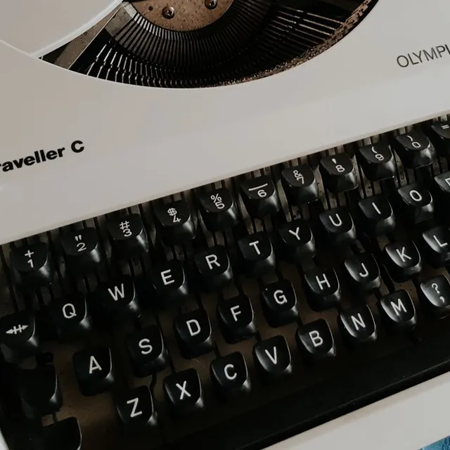
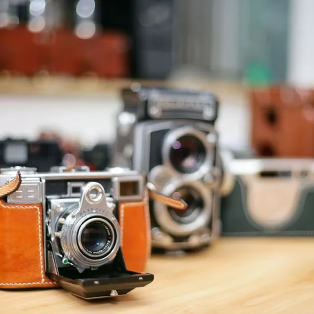
Brass, paper, glass and the odd telephone. Everything here was somebody's once. The spider came with the building.
Move your cursor and it follows. Stop, and it starts spinning. Press DEL to clear.Drag your finger and it follows. Let go, and it starts spinning.Drag the photos and stickers: the silk stretches with them.
One of each, mostly. When it is gone, it is gone.

Lid closes with a soft click. Needle still finds north.
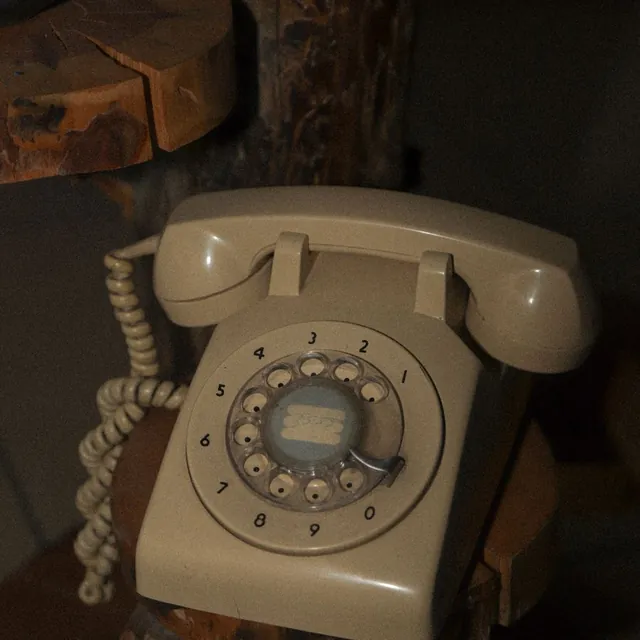
Heavy, round and very loud. Display piece, not wired.
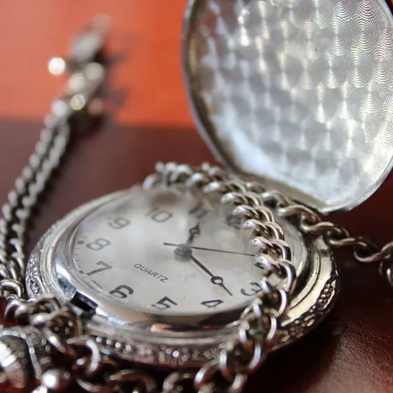
Engraved case, long chain. Needs a watchmaker's kindness.
A ring of heavy keys. The doors they opened are a mystery.
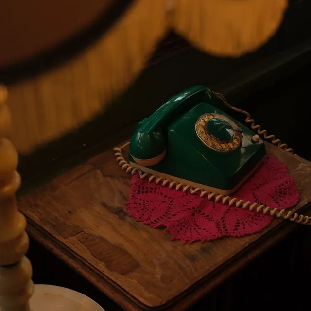
Office green, curly cord, dial with real resistance.
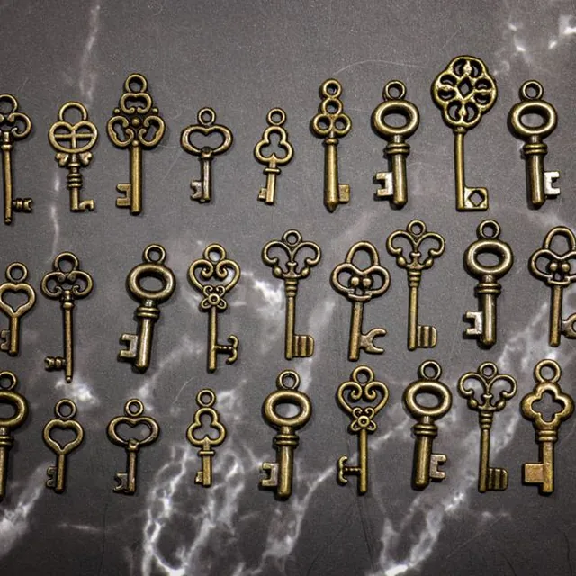
Sold by the handful, picked at random from the jar.
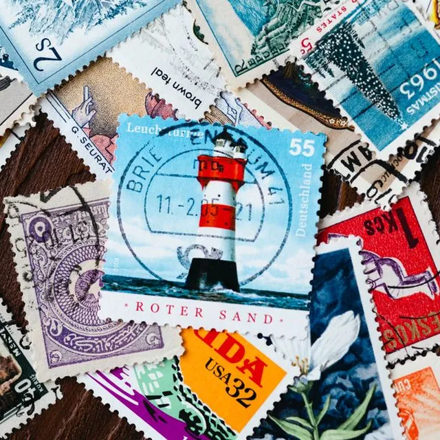
A fat envelope of used stamps from everywhere.
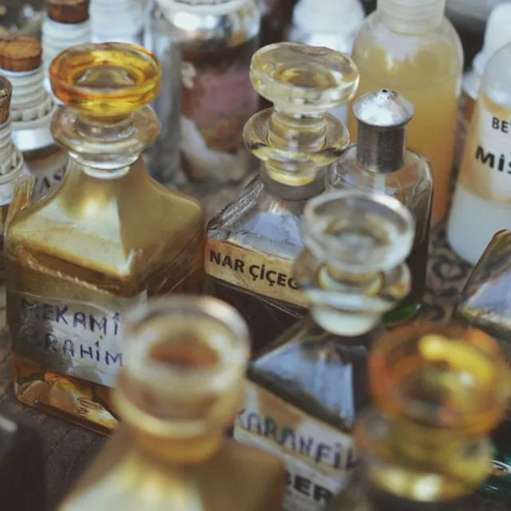
Three empty bottles with stoppers. Smell faintly of someone.
Families moving out of old Balad houses call us before the skip arrives.
Early, with coffee, before the good things are gone.
Bring us something odd. If we love it, we will make you an offer.
Shop 4, Bab Makkah passage
Al Balad, Jeddah
Saturday to Thursday, 4 pm to 11 pm
Friday, 6 pm to 11 pm
The spider is not for sale. We asked.